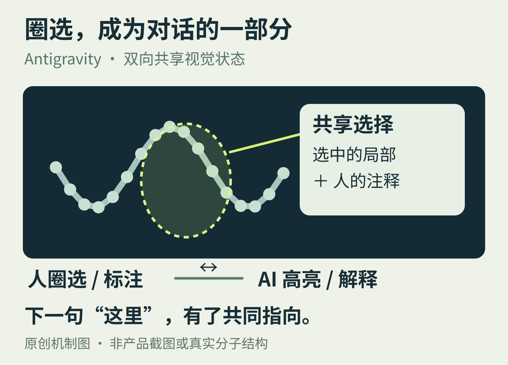

01 / NEW INTERFACE 官方动态 · 10月15日
圈一下蛋白质，
AI就知道你指哪里
“我说的是这里。”这句话，终于不用全部翻译成文字。

Google DeepMind 10月15日宣布在Antigravity中加入生物分子结构查看器。研究者和Agent共用一幅三维画布：AI能载入结构、标出区域；人能选中残基、在结合口袋上加注释。
关键变化是双向同步。你的选择会回到Agent的上下文。下一句“这部分有什么作用”，因此可以指向同一个空间位置，而不必重新描述一长串名字。
有趣的不是又多一个聊天入口
编辑观察：在专业软件里，选择、圈点和标注本身就是思考。把这些动作交给AI，比让人把屏幕内容反复翻译成提示词，更接近实际工作方式。
这也给前端开发者一个具体问题：用户正在看的对象、当前选择和注释，哪些应当成为共享状态？这是由示例引出的设计启发，不是Google已公开的底层协议。
原文展示了什么
官方用抗菌肽候选筛选演示流程，但候选仍在湿实验验证中，不能写成“已发现有效抗生素”。新查看器的版本、地区和完整开放范围也未披露。
Science插件已有公开安装说明；它与“所有账户已经能用新查看器”是两件事。想直观看操作，可从下方原始演示进入。